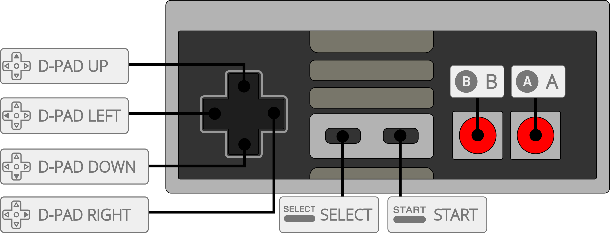

FCEU "mappers modified" is an unofficial build of FCEU Ultra by CaH4e3, which supports a lot of new mappers including some obscure mappers such as one for unlicensed NES ROM's.
The FCEUmm core has been authored by
The FCEUmm core is licensed under
A summary of the licenses behind RetroArch and its cores can be found here.
Content that can be loaded by the FCEUmm core have the following file extensions:
RetroArch database(s) that are associated with the FCEUmm core:
Required or optional firmware files go in the frontend's system directory.
| Filename | Description | md5sum |
|---|---|---|
| disksys.rom | Family Computer Disk System BIOS - Required for Famicom Disk System emulation | ca30b50f880eb660a320674ed365ef7a |
| gamegenie.nes | Game Genie add-on cartridge - Required for Game Genei Add-on emulation | 7f98d77d7a094ad7d069b74bd553ec98 |
Frontend-level settings or features that the FCEUmm core respects.
| Feature | Supported |
|---|---|
| Restart | ✔ |
| Screenshots | ✔ |
| Saves | ✔ |
| States | ✔ |
| Rewind | ✔ |
| Netplay | ✔ |
| Core Options | ✔ |
| RetroAchievements | ✔ |
| RetroArch Cheats | ✔ |
| Native Cheats | ✔ |
| Controls | ✔ |
| Remapping | ✔ |
| Multi-Mouse | ✕ |
| Rumble | ✕ |
| Sensors | ✕ |
| Camera | ✕ |
| Location | ✕ |
| Subsystem | ✕ |
| Softpatching | ✔ |
| Disk Control | ✕ |
| Username | ✕ |
| Language | ✕ |
| Crop Overscan | ✕ |
| LEDs | ✕ |
The FCEUmm core's internal core name is 'FCEUmm'
The FCEUmm core saves/loads to/from these directories.
Frontend's Save directory
| File | Description |
|---|---|
| *.srm | Cartridge battery save |
Frontend's State directory
| File | Description |
|---|---|
| *.state# | State |
Frontend's System directory
| File | Description |
|---|---|
| nes.pal | Custom palette (64 triplets) |
To use custom color palettes in the FCEUmm core, the 'Color Palette' core option must be set to custom and the custom color palette file you want to use must be in RetroArch's system directory.
Make sure the custom palette file is named 'nes.pal'
Custom color palettes for the NES can be generated with either of these tools.
The FCEUmm core has the following option(s) that can be tweaked from the core options menu. The default setting is bolded.
Settings with (Restart) means that core has to be closed for the new setting to be applied on next launch.
Region [fceumm_region] (Auto|NTSC|PAL|Dendy)
Force core to use NTSC, PAL or Dendy system audio / video timings.
Preferred aspect ratio [fceumm_aspect] (8:7 PAR|4:3)
Choose the preferred aspect ratio. RetroArch's aspect ratio must be set to Core provided in the Video settings.
??? note "Preferred aspect ratio - 8:7 PAR"
??? note "Preferred aspect ratio - 4:3"

Color Palette [fceumm_palette] (default|asqrealc|nintendo-vc|rgb|yuv-v3|unsaturated-final|sony-cxa2025as-us|pal|bmf-final2|bmf-final3|smooth-fbx|composite-direct-fbx|pvm-style-d93-fbx|ntsc-hardware-fbx|nes-classic-fbx-fs|nescap|wavebeam|raw|custom)
Choose which color palette is going to be used. The raw palette can used in combination with the nes-decoder shader to give colors based off on Bisqwit's NES palette generator and applies either an FCC color conversion matrix or specific Sony US matrix.
!!! attention "Disclaimer" These 'Color Palette core option screenshots have been taken with the 'Use NTSC Palette' core option set to Off.
??? note "Color Palette - default"

??? note "Color Palette - asqrealc"

??? note "Color Palette - nintendo-vc"

??? note "Color Palette - rgb"

??? note "Color Palette - yuv-v3"

??? note "Color Palette - unsaturated-final"

??? note "Color Palette - sony-cxa2025as-us"

??? note "Color Palette - pal"

??? note "Color Palette - bmf-final2"

??? note "Color Palette - bmf-final3"

??? note "Color Palette - smooth-fbx"

??? note "Color Palette - composite-direct-fbx"

??? note "Color Palette - pvm-style-d93-fbx"

??? note "Color Palette - ntsc-hardware-fbx"

??? note "Color Palette - nes-classic-fbx-fs"

??? note "Color Palette - nescap"

??? note "Color Palette - wavebeam"

??? note "Color Palette - raw"

Allow Opposing Directions [fceumm_up_down_allowed] (disabled|enabled)
Enabling this will allow pressing / quickly alternating / holding both left and right (or up and down in some games) directions at the same time.
This may cause movement based glitches to occur in certain games.
It's best to keep this core option disabled.
Crop Overscan (Horizontal) [fceumm_overscan_h] (disabled|enabled)
Crop out (horizontally) the potentially random glitchy video output that would have been hidden by the bezel around the edge of a standard-definition television screen.
??? note "Crop Overscan (Horiontal) - Off"

??? note "Crop Overscan (Horizontal) - On"

Crop Overscan (Vertical) [fceumm_overscan_v] (enabled|disabled)
Crop out (vertically) the potentially random glitchy video output that would have been hidden by the bezel around the edge of a standard-definition television screen.
??? note "Crop Overscan (Vertical) - On"

??? note "Crop Overscan (Vertical) - Off"

No Sprite Limit [fceumm_nospritelimit] (disabled|enabled)
Removes 8-sprites-per-scanline hardware limit.
Sound Volume [fceumm_sndvolume] (0|1|2|3|4|5|6|7|8|9|10)
Self-explanatory.
Sound Quality [fceumm_sndquality] (Low|High|Very High)
Enables high/higher sound quality for games using expansion audio (MMC5, VRC6, VRC7, Namco, Sunsoft). Use Low for slower devices.
Swap Duty Cycles [fceumm_swapduty] (disabled|enabled)
Replicates the sound of some famiclones that have duty cycles swapped for square channels. A quick sound comparison is in Contra's sound effect when shooting with normal bullets.
Turbo Enable [fceumm_turbo_enable] (None|Player 1|Player 2|Both)
Enable the use of the Turbo B and Turbo A buttons.
Turbo Delay (in frames) [fceumm_turbo_delay] (3|5|10|15|30|60|1|2)
The number of frames between consecutive button presses when the Turbo B or Turbo A buttons are held down.
Zapper Mode [fceumm_zapper_mode] (lightgun|touchscreen|mouse)
Pointer allows the Zapper Device Type to be used for touch-devices, but still can be used with regular mouse. Pointer and Mouse mode movement behaves differently with different input driver so user can choose which movement feels natural to them.
Show Crosshair [fceumm_show_crosshair] (enabled|disabled)
Show the crosshair for the Zapper device type.
??? note "Show Crosshair - On"

??? note "Show Crosshair - Off"

Overclocking [fceumm_overclocking] (disabled|2x-Postrender|2x-VBlank)
Overclocks the NES using PPU method to minimize ingame slowdowns of some games. Contra Force needs VBlank mode (stage 3 slowdowns). Choose which ever minimizes slowdowns without image distortion.
RAM power up state (Restart) [fceumm_ramstate] ($FF|$00|random)
Choose RAM startup during power up. Fill the ram with either $FF, $00 or random. Some games rely on initial ram values for random generator as an example.
Some unlicensed carts and rom hacks prefers $00 or else rom will not boot up or causes graphics glitches or any other problems.
NTSC Filter [fceumm_ntsc_filter] (disabled|composite|svideo|rgb|monochrome)
Enable blargg NTSC filters.
!!! attention "Disclaimer" These 'NTSC Filter' core option screenshots have been taken with the 'Color Palette' core option set to smooth-fbx.
??? note "NTSC Filter - Off"

??? note "NTSC Filter - composite (color bleeding + artifacts)"

??? note "NTSC Filter - svideo (color bleeding only)"

??? note "NTSC Filter - rgb (crisp image)"

??? note "NTSC Filter - monochrome (desaturated + artifacts)"

Show Advanced System Options [fceumm_show_adv_system_options] (disabled|enabled)
Show advanced system options and tweaks.
Show Advanced Sound Options [fceumm_show_adv_sound_options] (disabled|enabled)
Show advanced sound controls and tweaks.
The FCEUmm core supports the following device type(s) in the controls menu, bolded device types are the default for the specified user(s):
NOTE 1: Zapper connected to user 1 is only required on VS Unisystem games. You will hear a loud alarm when a game requires one and no zapped device is selected or the game's CRC fails to match existing database for autodetection.
NOTE 2: Zapper connected to user 2 is required for most cases. See note 1 above.
The FCEUmm core will also auto select the following controllers for the Famicom based off the loaded game's crc.
The FCEUmm core supports up to 4 players in multitap games for the NES and Famicom, games with multitap usage are detected by their crc. Multitap can be manually enabled if selecting 4-Player Adaptor in User 5 Device type.

!!! warning In order to use the Turbo A and Turbo B buttons, the 'Turbo Enable' core option must be set to On.
| User 1 Remap descriptors | RetroPad Inputs |
|---|---|
| B |  |
| Turbo B |  |
| Select |  |
| Start |  |
| D-Pad Up |  |
| D-Pad Down |  |
| D-Pad Left |  |
| D-Pad Right |  |
| A |  |
| Turbo A |  |
| (FDS) Disk Side Change |  |
| (FDS) Insert/Eject Disk |  |
| (VSSystem) Insert Coin |  |
| User 2 - 4 Remap descriptors | RetroPad Inputs |
|---|---|
| B | |
| Turbo B | |
| Select | |
| Start | |
| D-Pad Up | |
| D-Pad Down | |
| D-Pad Left | |
| D-Pad Right | |
| A | |
| Turbo A | |
| RetroMouse Inputs | Zapper | Arkanoid | Oeka Kids Tablet | Bandai Hyper Shot Gun |
|---|---|---|---|---|
 or or  |
Zapper Crosshair | Arkanoid Movement | Oeka Kids Tablet Cursor | Bandai Hyper Shot Gun Crosshair |
 or or  |
Zapper Trigger | Arkanoid Fire | Oeka Kids Tablet Touch | Bandai Hyper Shot Gun Trigger |
| Game | Issue |
|---|---|
| Skull & Crossbones | Graphical glitches and screen shaking when in 2-player mode. |